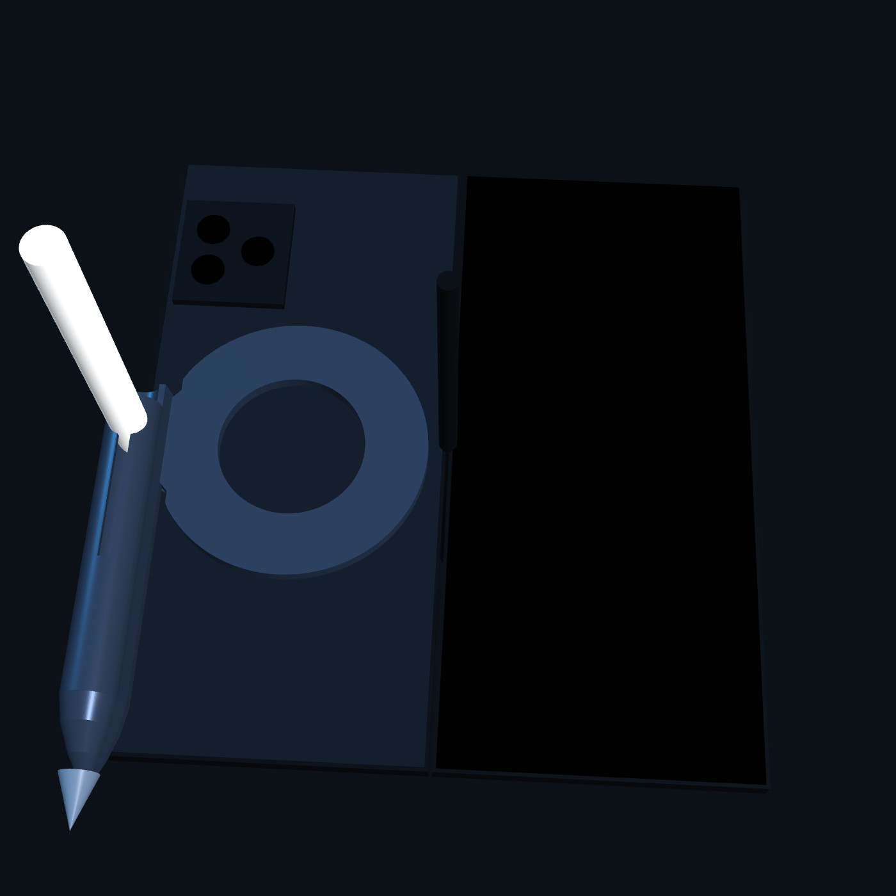
00 / AURA DUO ★
iPhone Duo 與 Apple Pencil Pro
雙屏鉸鏈感知設計，側滑長鞘，旗艦簽名款。為 iPhone Duo 雙屏摺疊機量身打造。
MAGNETIC STYLUS HOLDER / MAG HOLDER
一個磁吸筆座，讓手寫筆在保護殼背面有自己的位置。為隨身閱讀、隨手記下靈感而設計。
開放打樣檔案 · 自行列印與組裝 · 目前為設計原型
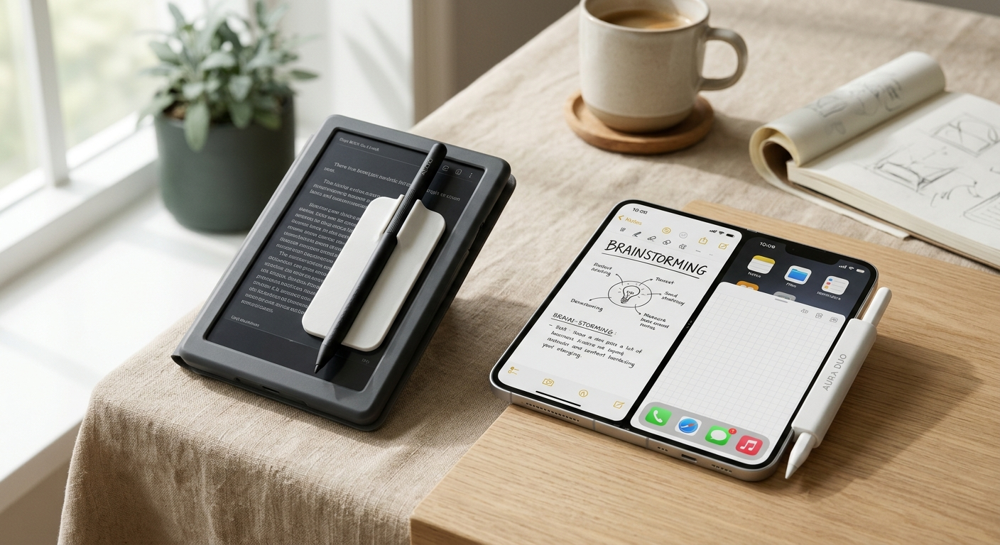
FIND YOUR EVERYDAY FIT
先選收納方式，再檢視尺寸與設備適配。

00 / AURA DUO ★
雙屏鉸鏈感知設計，側滑長鞘，旗艦簽名款。為 iPhone Duo 雙屏摺疊機量身打造。
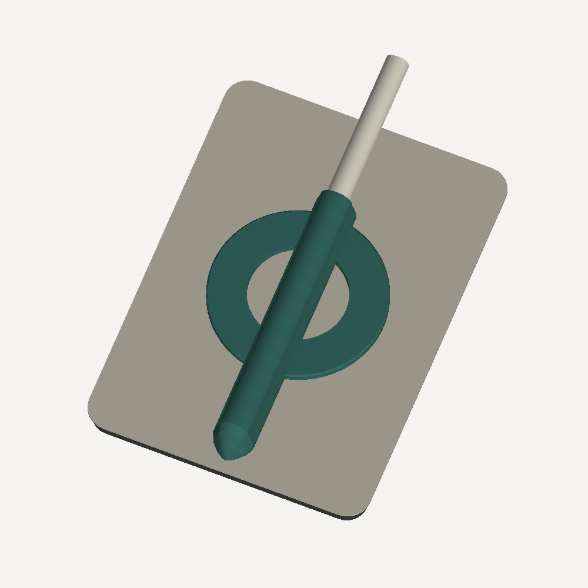
01 / AERIS
長鞘輪廓，沿機背收納筆身。適合先探索縱向收納的 BOOX 使用者。
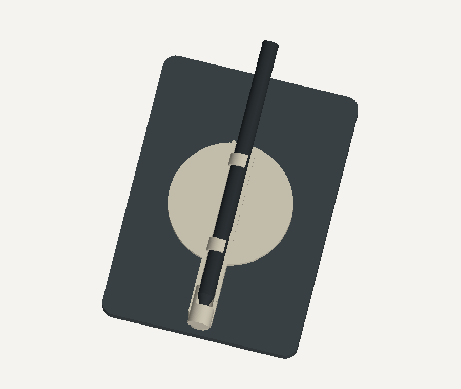
02 / ORBIT
開放背骨與側開 C 夾，搭配底部筆尖保護杯。
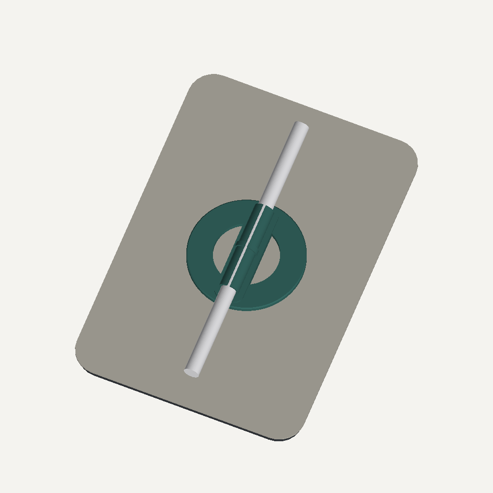
03 / ECLIPSE MINI
為 Apple Pencil 探索的緊湊環扣。列印前，先確認筆型與保護殼。
核對筆徑、保護殼與磁環位置；磁吸收納不會為設備增加手寫功能。
下載對應資料包，先試印筆徑或側夾試片，再與列印商確認 PA12 製程。
依指南準備磁石與磁環，完成裝配後測試配合與保持力，再開始攜帶。
MAG HOLDER · 磁吸手寫筆座設計原型
旋轉真實 STL 模型，查看形狀、底面與尺寸。選好款式，再下載對應檔案。
探索十大旗艦設計 ↓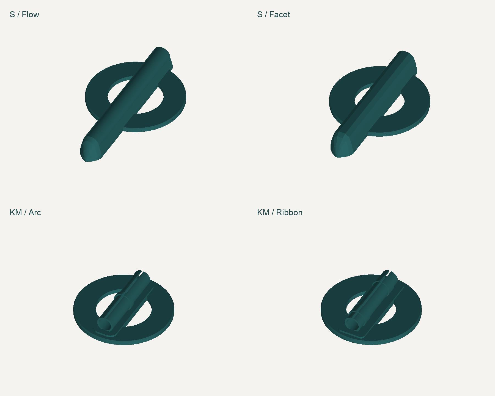
這個設計，起於一位 BOOX 使用者的真實困擾：有筆、有保護殼，卻沒有一個順手的位置放筆。分開攜帶容易遺忘，隨手放下又可能滑落、撞傷。
我們想把「記得帶筆」變成一個更自然的動作：收好閱讀器時，筆也有自己的位置。因此，從保護殼背面的磁環出發，設計可拆卸的筆座。
薄一點，輕一點。
拿取順手，也值得隨身帶著。
想把閱讀器與筆一起帶走，減少出門前找筆的步驟。
在閱讀與筆記之間切換，希望收納位置固定、拿取直覺。
偏好簡潔的一體外形，願意透過試印找到適合自己的尺寸與表面。
好的設計絕非憑空生成，而是將使用限制、幾何公差與磁路工程，一步步從手繪線條推演至 3D 物理實體。在此見證設計誕生的四個決定性時刻。
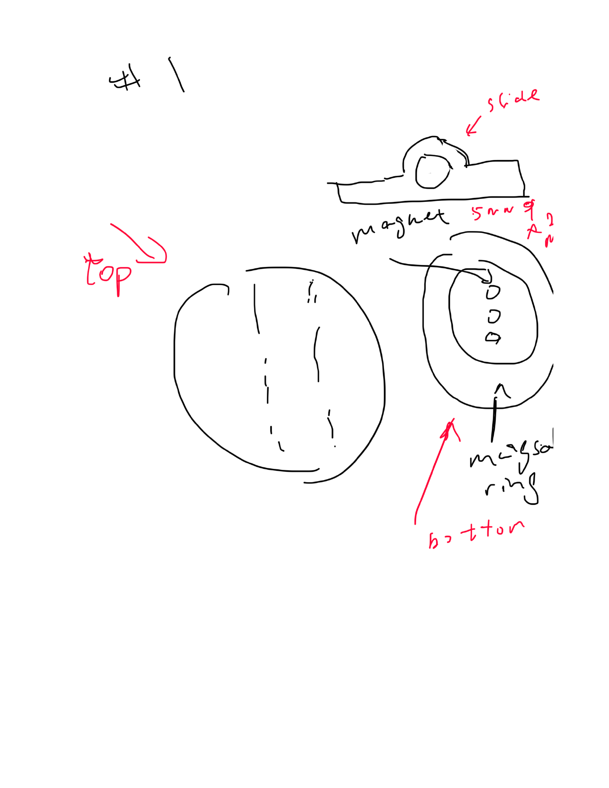
CONCEPT SKETCH以鉛筆手繪推演斜向收納的可行性，首次定義「免拆保護殼、單手順拔、磁吸導向」的原型架構。
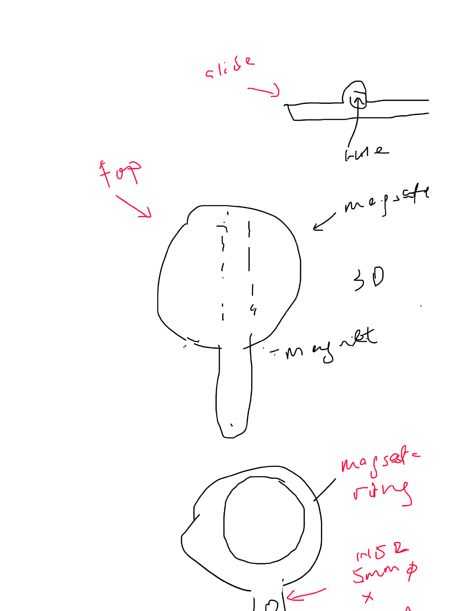
SECTION STUDY手繪細部剖面標註下置盲孔與側鍵避空槽，精確計算 PA12 尼龍收縮比，消除插拔干涉。
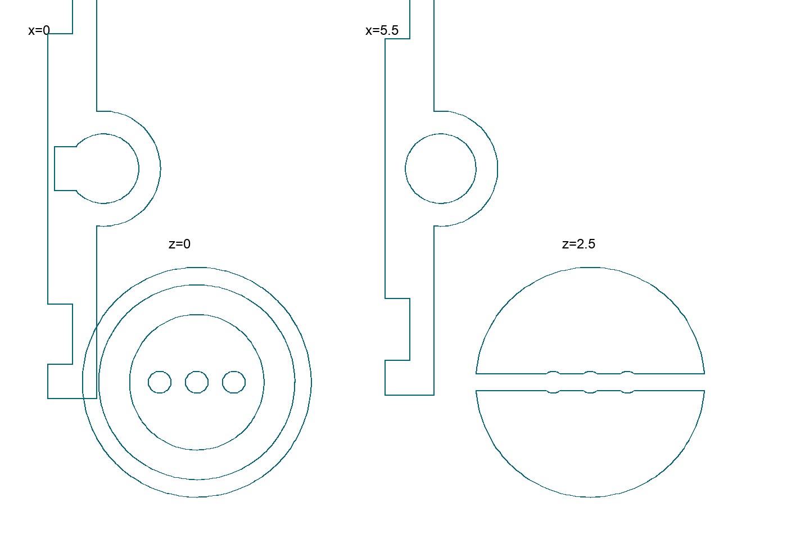
CAD BLUEPRINT轉換為 CAD 幾何剖面，驗證 MagSafe 磁吸環與三顆垂直下置強磁的磁通隔絕，確立雙磁力系統。
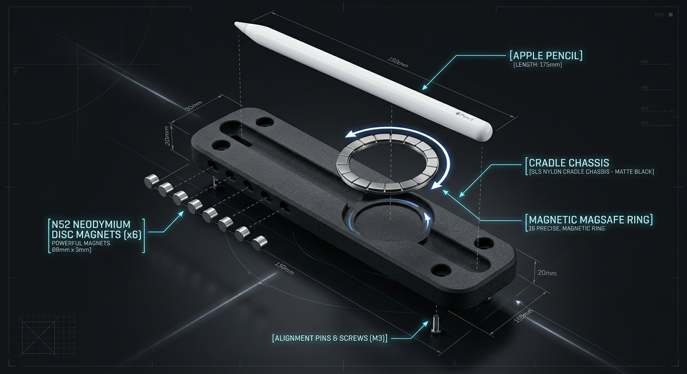
EXPLODED ASSEMBLY完整呈現設備背板、引磁環、PA12 尼龍一體外殼、N52 釹鐵硼磁鐵、3D 密封蓋及手寫筆的六層精密層疊。
參數再精密，終究要回歸真實物理世界。從游標卡尺的實機取樣、波浪保護殼的公差適配，到首件 3D 打印實體裝機測試——這就是 Mag Holder 在工作室桌面上真實誕生的痕跡。
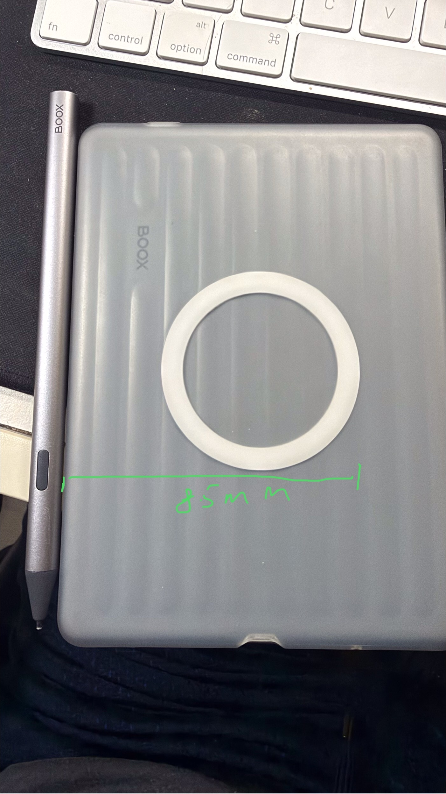
BENCH EVIDENCE / 01實機裝配波浪紋保護殼與 MagSafe 導磁環，照片保留早期量度記錄；原85 mm讀數已由使用者更正為75 mm，v9 按更正尺寸設計。
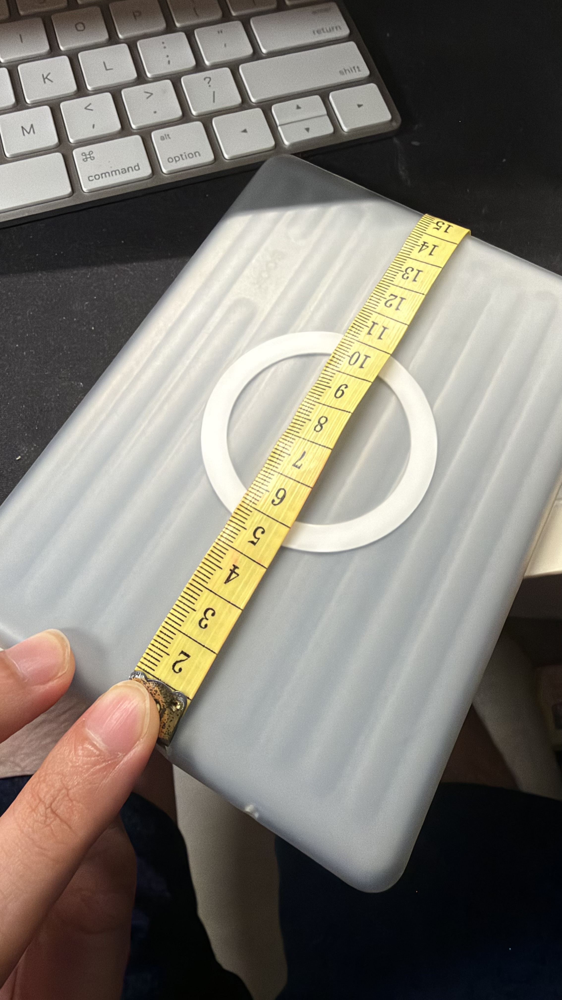
BENCH EVIDENCE / 02使用黃色鋼捲尺橫向與縱向精確複核保護殼 2–15 cm 浮雕紋理間距，保證筆座底座平坦接觸，杜絕按壓翹起。
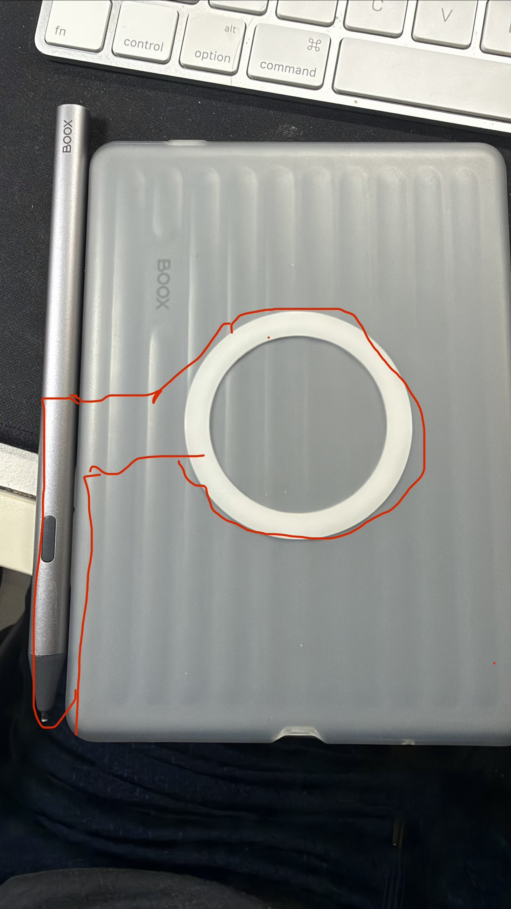
BENCH EVIDENCE / 03以紅色簽字筆在導磁環與殼體表面手繪力矩支撐點與側邊導流槽，確認手指持握時的貼合手感與防滑邊界。
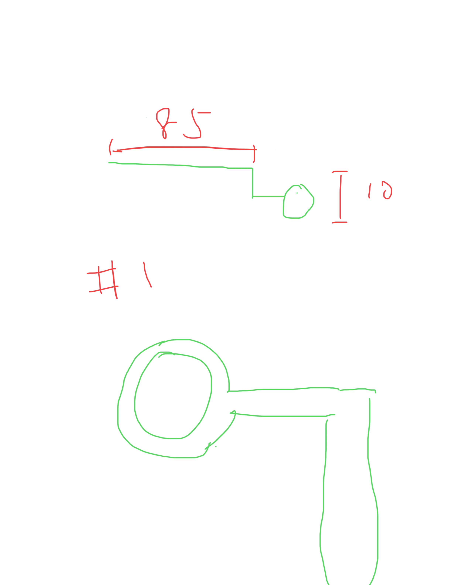
BENCH EVIDENCE / 04設計筆記草圖：推算底座外徑、內凹卡槽與頂部收容環的幾何配比，推導出 10 mm 彈性收容空間與防滑扣位。
擺脫散落背包底層的翻找焦慮。從晃動捷運上的單手速記，到木質咖啡桌旁的靈感捕捉，Mag Holder 讓手寫筆宛如設備天生的一部分，安穩、直覺、富有秩序。
在顛簸搖晃的捷運車廂裡，單手握持 BOOX 翻頁；AERIS 110 mm 旗艦長鞘與 5 顆下置強磁將手寫筆穩固收納於背板，隨時順滑抽拔標註重點。
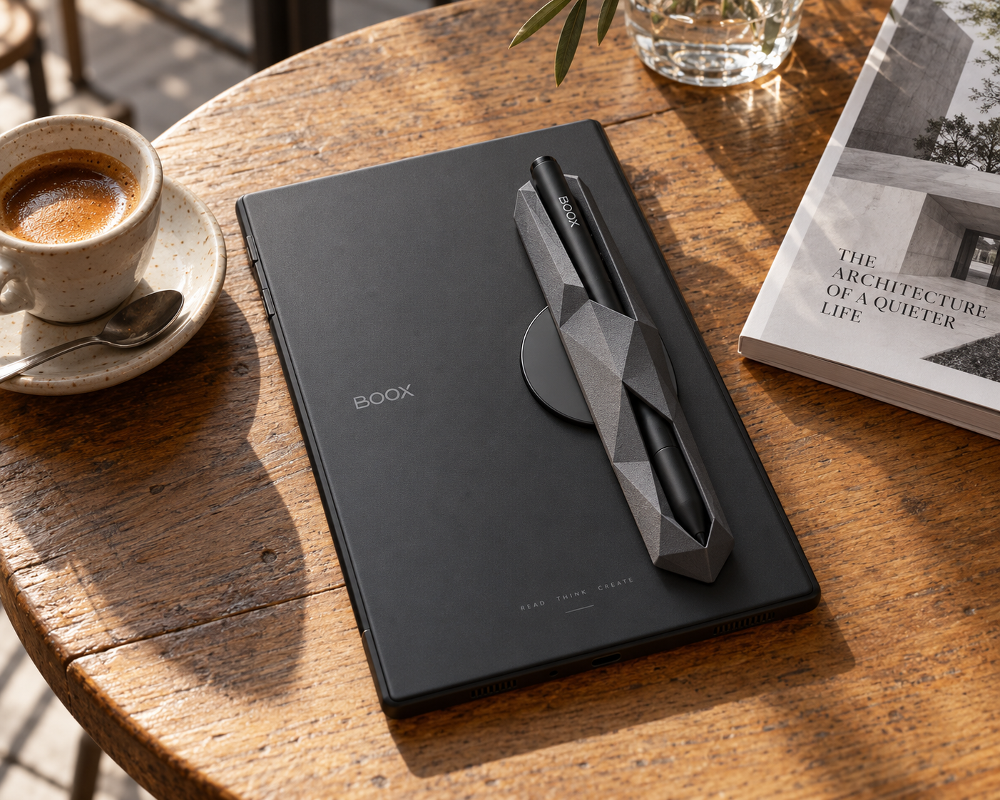
02 / VERTEX · CAFE午後咖啡桌畔，點一杯黑咖啡攤開筆記。VERTEX 俐落的建築倒角導引手指順勢拔出筆身，靈感閃現即時成文，思緒毫無阻滯。
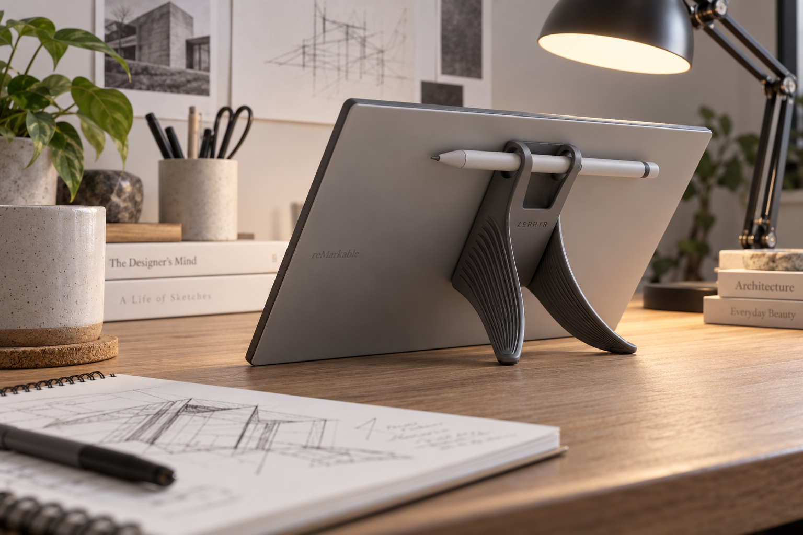
03 / ZEPHYR · DESK TILT平置辦公桌面時，ZEPHYR 雙翼夾肋恰如其分地墊高背部形成人體工學仰角，撫平頂燈倒影，手腕長時間握筆書寫更自如放鬆。
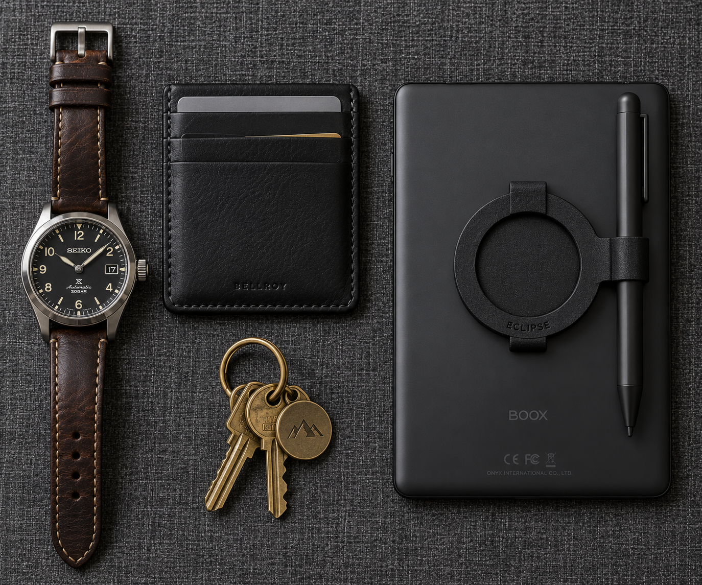
04 / ECLIPSE · EDC與皮夾、手錶及耳機並列。ECLIPSE 68 mm 環形收束外型無尖銳稜角，整機放進口袋或西裝內袋零勾扯，極致純粹。
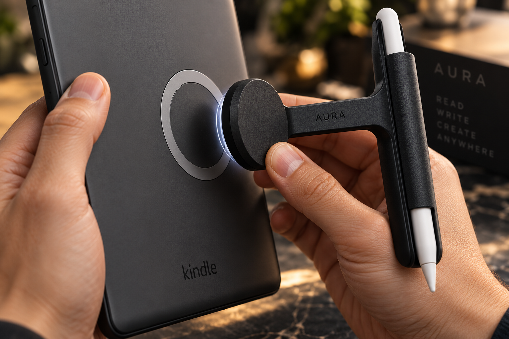
05 / AURA · MODULAR SNAP橫向延展 60.3 mm 的 AURA 側滑鞘，讓手寫筆自然就位機身側翼；在家一撥即卸享受純粹閱讀，出門靠近磁環清脆「喀嗒」合體。
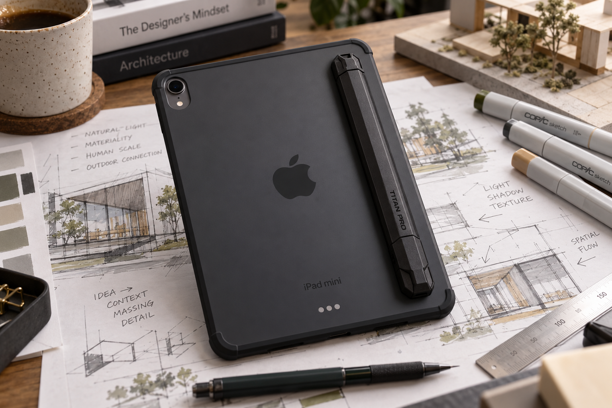
06 / TITAN PRO · IPAD專為 iPad mini 獨立打造。130.54 mm 長度實現 0 mm 頂部露出完全包覆，徹底告別原廠側邊磁吸在包袋中被意外撞落的痛點。
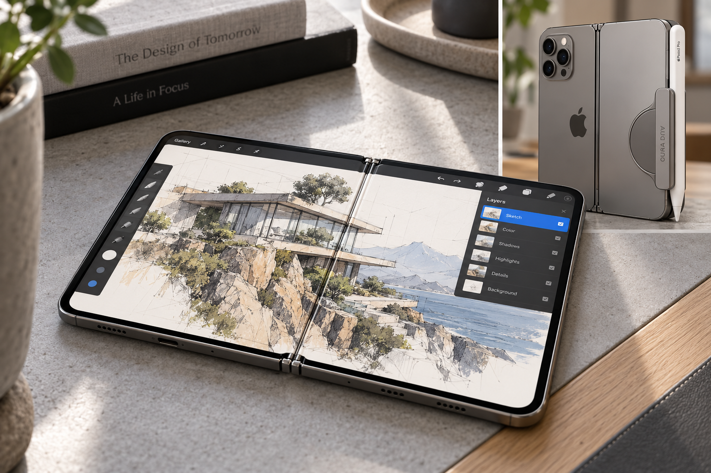
07 / AURA DUO · iPHONE DUO ★iPhone Duo 攤開雙屏進入速記模式，AURA DUO 鉸鏈感知側凹確保摺疊與展開兩態皆穩固；Apple Pencil Pro 吸附於側翼，隨手一抽即進入書寫狀態，讓雙屏體驗真正完整。
故事從 BOOX Go 6 出發：把筆留在閱讀器身邊。早期探索斜向收納，如今 v9 則聚焦縱向取筆；兩個方向各有取捨，而不是同一個已驗證的答案。
157.5 mm 筆軸旋轉 34° 後，兩方向投影均小於機身尺寸。但這只是可平移的筆軸幾何，不包含筆徑、筆座、磁環偏置及按鍵；不代表現有 v9 裝配可零突出。
保留同事新增的縱向配置：Flow 加長至 120 mm，Facet 保留 100.00 mm。以底部不超出機身為優先，接受筆尾露出；上述數字依賴約 75 mm 的磁環位置與指定筆位。
以筆軸為中心的自由定位研究。下方預覽不模擬 v9 固定安裝位置，亦不驗證筆座包絡或保持力。
iPad mini 的背面收納不取代側邊配對與充電。mini 6 與 A17 Pro 的 Pencil 相容性須分開確認。
以實際 v9 STL 放上按 BOOX 尺寸建立的機身與保護殼示意，讓筆座的比例、安放方向及突出位置更容易理解。
筆尖向下進入單一筆鞘，外殼沿筆身延伸；收束尾端與底座連成同一輪廓。加長後，設定位置下機底只留 3 mm 餘位，筆尾上露減至 24.54 mm。
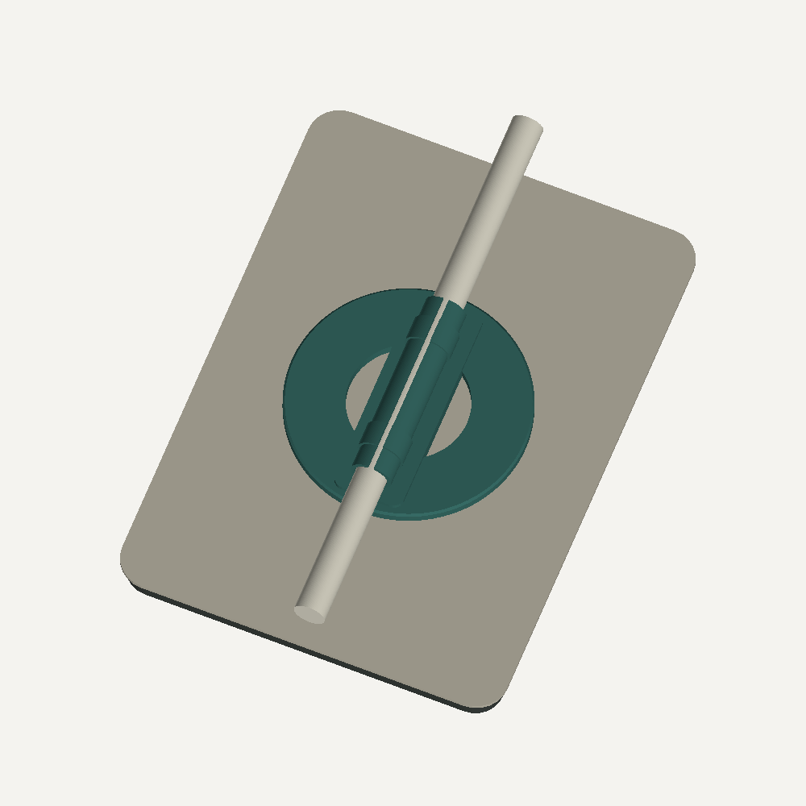
02 / ZEPHYR · BACK VIEW羽翼流線微弧夾與環帶集中於 68 mm 圓形底座，保留輕盈無感輪廓。筆身雙磁保持，單手隨取隨放。
概念裝機渲染，非實物照片。筆座來自實際 STL；機身、保護殼與筆為尺寸示意，未重現按鍵、接口及全部外觀細節。按磁環中心距機底 75 mm、指定筆位繪製；不代表已完成裝機或防跌測試。
01 對準背殼磁環
→02 沿筆道放入手寫筆
→03 確認固定後一起帶走
iPhone Duo 帶來雙屏展開的全新操作維度。AURA DUO 是第一款專為雙屏鉸鏈設計的磁吸筆座——感知鉸鏈側邊、容納 Apple Pencil Pro，讓你在折疊與展開之間無縫切換，筆始終在它應在的位置。
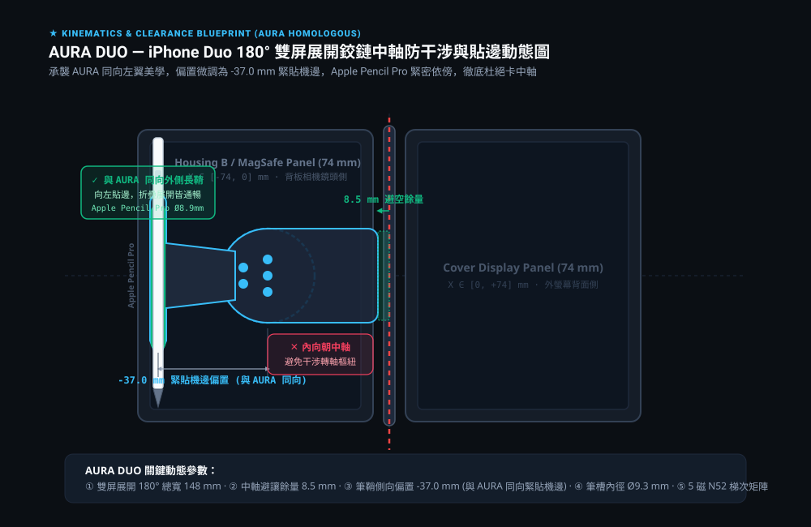
iPhone Duo 展開為雙屏（總寬 148 mm）時，中軸（X=0）為折疊鉸鏈核心。AURA DUO 承襲 AURA 同向側滑導軌語言，將長鞘（# Scabbard）向外側微調至 37.0 mm 緊貼 iPhone 機邊，讓 Apple Pencil Pro 緊密依傍於外緣筆鞘內，底座與中軸保留 8.5 mm 避空餘量，既消除懸空空隙，又徹底杜絕卡中軸困擾。
概念裝機渲染，非實物照片。AURA DUO 為 iPhone Duo 雙屏摺疊機概念設計，尚未完成實機尺寸驗證；Apple Pencil Pro 之相容性，請先以試片確認筆徑後再列印主件。
AERIS、VERTEX、ECLIPSE 與 ZEPHYR 探索縱向軸心佈局；AURA DUO 作為旗艦簽名款，專為 iPhone Duo 雙屏與 Apple Pencil Pro 而生；AURA、NEXUS 與 AXIS 側滑系列拓展側翼外擴取筆維度；全新 ORBIT 與 STRATOS 開脊系列以微彈 C 夾與開放式背骨，帶來「微傾即取」的極致靈活。
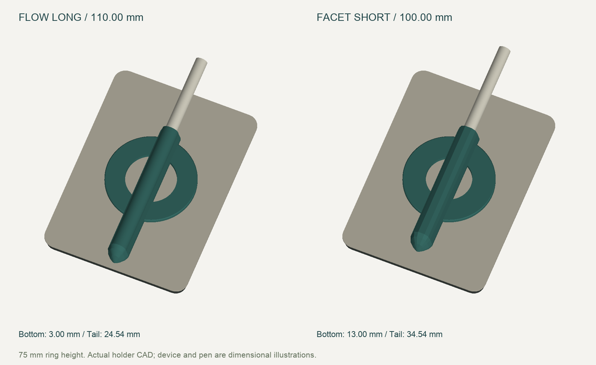
AERIS 比 VERTEX 長 10.00 mm，筆位也下移 10.00 mm。兩者以相同比例、同一個 75 mm 磁環位置比較。這是磁環中心，不是機身幾何中心。
已按你確認的磁環中心距殼底75 mm修訂。底部餘位以殼底為準；筆尾上露暫按149 mm機高估算，殼外高不同時會略有差異。
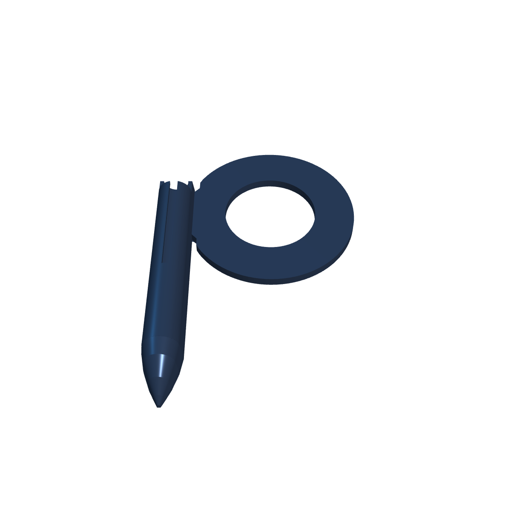
SIGNATURE / v1 · iPHONE DUOiPhone Duo 專屬旗艦。傳承 AURA 同向側滑導軌，37.0 mm 緊貼機邊偏置，支援 Apple Pencil Pro（Ø8.9 mm）。5 顆 N52 梯次強磁，展開與折疊態零干涉。
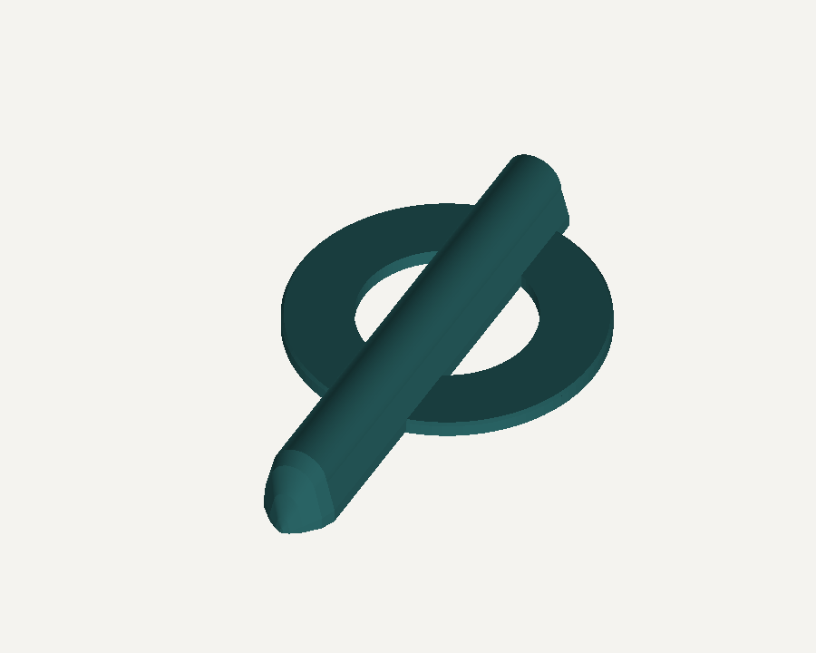
FLAGSHIP / v9 · BOOX向機底延長 10.00 mm，按 75 mm 磁環位置僅留 3 mm 底部微距；沉浸式包裹筆身，v9 升級 5 顆強磁配置，筆尾上露收窄至 24.54 mm。
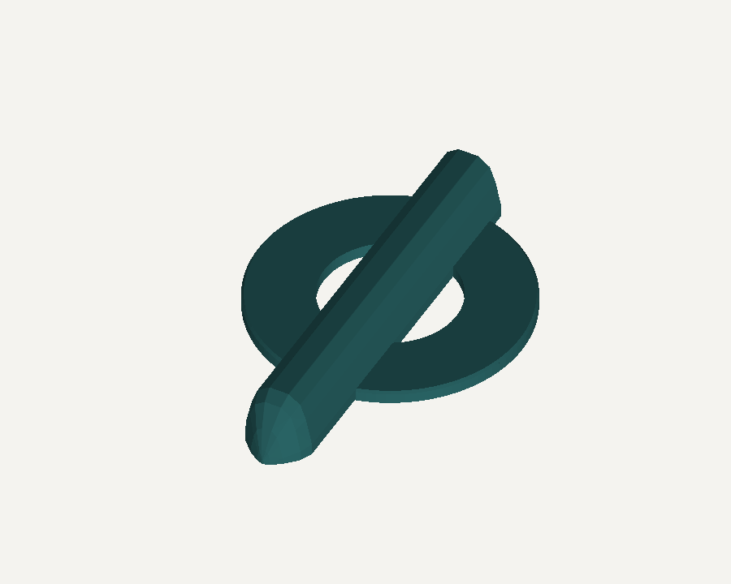
FLAGSHIP / v9 · BOOX保留 100.00 mm 筆鞘與剛毅切面。按 75 mm 磁環位置底部餘量 13.00 mm，v9 升級 5 顆強磁配置，筆尾露出 34.54 mm，取筆更加靈動迅捷。
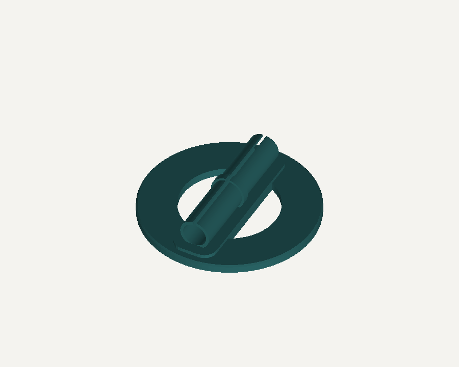
FLAGSHIP / v9 · BOOX圓弧微彈卡扣無縫融合於圓形磁吸底座。雙磁吸力佈局，極致收斂的器物美感。
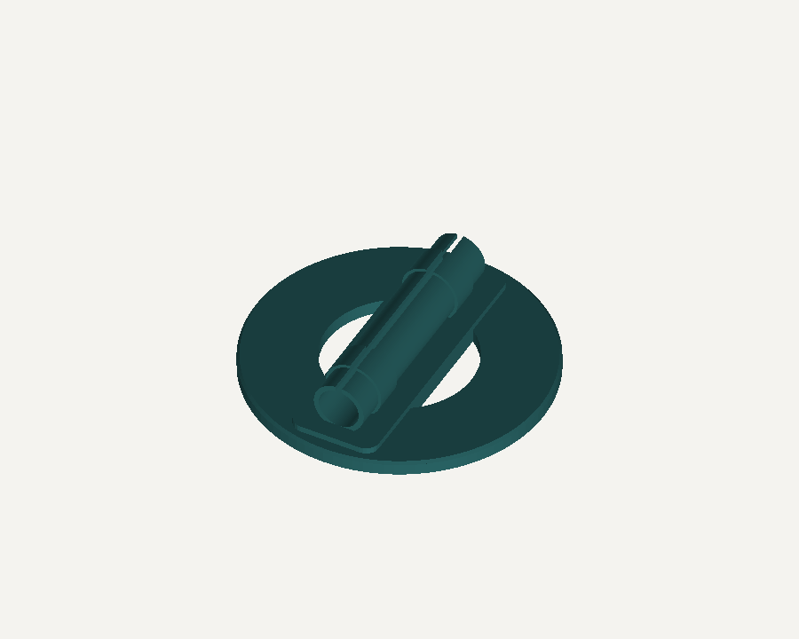
FLAGSHIP / v9 · BOOX帶狀流體線條串連微弧翼夾與筆道，以極具未來感的流線節奏呈現緊湊結構。
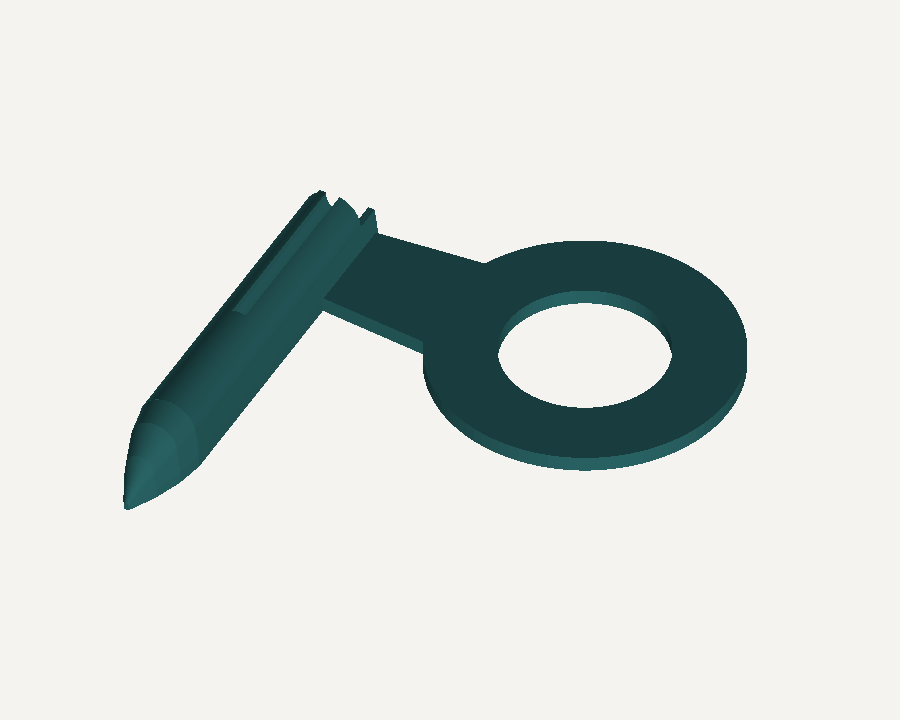
SLIDE / v3 · BOOX側向外擴 60.3 mm 流光導軌筆鞘，具 18 mm 劍梢導角；5 顆 Ø5×1 mm 梯次強磁排列，兼具流暢插拔與極致穩定。
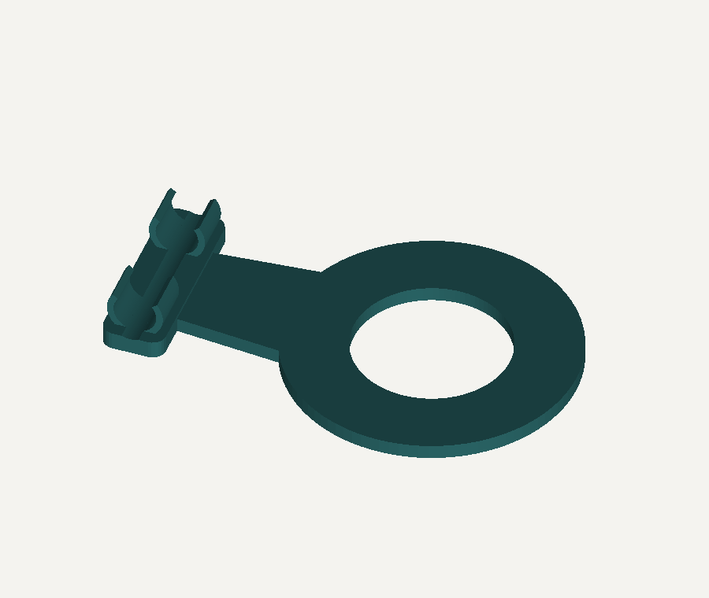
SLIDE / v3 · BOOX雙 C 形微弧翼夾搭配 3 顆 Ø5×1 mm 磁鐵，極致側翼輕量化。筆身一秒瞬取，在保持力與拿取速度間取得完美平衡。
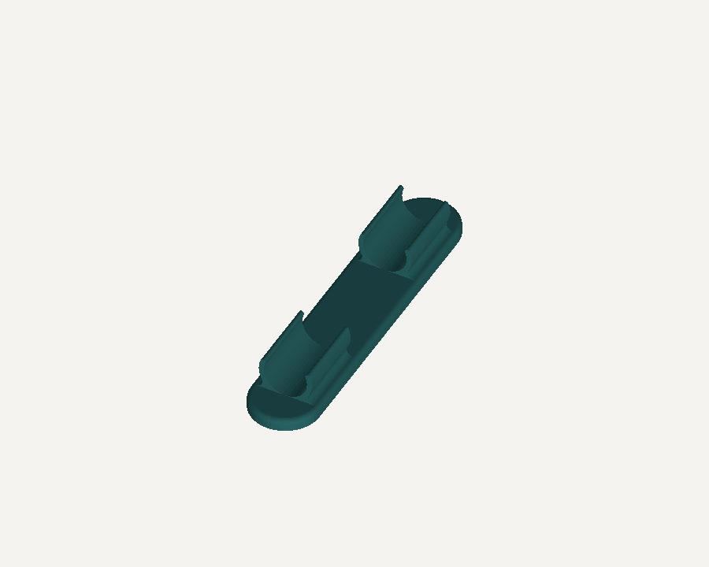
SLIDE / v3 · BOOX & iPad14 mm 極致修長窄身導軌夾，3 顆 Ø5×1 mm 磁鐵線性排布。極致減重、純粹幾何，專為俐落便攜與多元適配而生。
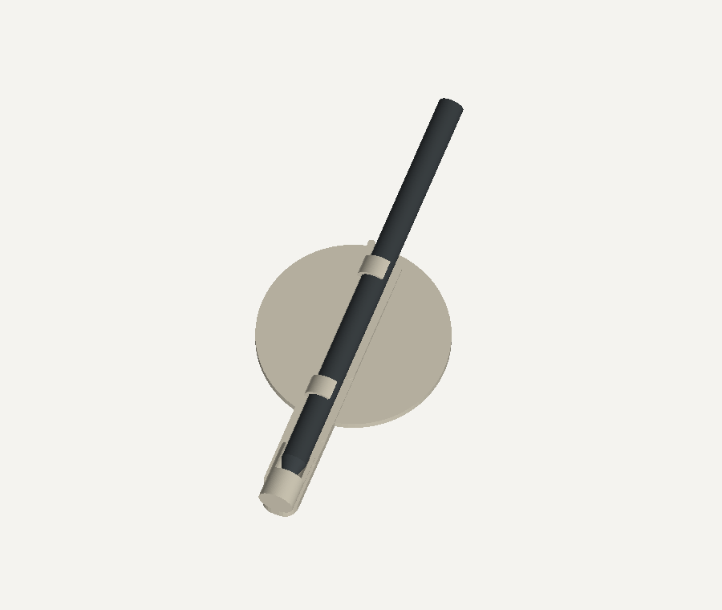
OPEN SPINE / 5-MAG · BOOX開放式背骨搭配雙側開微彈 C 夾（夾中距 -27/+22 mm），底端設封閉保護筆尖杯。側向微傾順勢拔出；配備 5 顆 Ø5×1 mm 梯次強磁孔位，緊湊靈活。
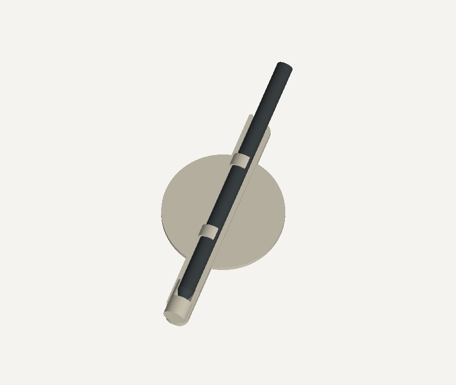
OPEN SPINE / 5-MAG · BOOX背骨向上延伸至 +57 mm（總長 129 mm），拉闊雙 C 翼夾持跨距（-19/+27 mm），提供長軸全段抗晃支撐。底端設筆尖杯與 5 顆 Ø5×1 mm 梯次強磁，守護更周全。
九款畫面均由實際 CAD 幾何生成，材質顏色僅供視覺預覽；實際表面與手感需以打印樣件確認。
雙磁力系統：MagSafe 設備吸附環，與 5 顆隱藏式手寫筆吸附磁鐵在同一件尼龍結構中精密交會。
外徑 Ø58.4 mm、內徑 Ø39.6 mm、深度 2.0 mm 專用環形凹槽，完全容納標準 58 × 40 × 1.8 mm 磁吸環，提供穩固的可拆卸吸附力。
AERIS 與 VERTEX 底部設有 5 顆 Ø5.3 × 4.0 mm 盲孔（Y = -48, -38, -12, 0, 12 mm），延伸段增設雙磁強化下端吸附；其餘款式設有 3 顆。孔頂保留尼龍隔層保護筆身。
隨附 Ø5.05 × 2.7 mm 緊配合階梯墊片（AERIS/VERTEX 各 5 顆，其餘各 3 顆），磁鐵與雙面膠裝入後封裝平整，確保接觸面平滑、不刮傷手機殼。
環形嵌槽具 0.2 mm 裝配公差，適配各類市售背膠磁吸環。底面維持平整貼合。
Ø58.4 × Ø39.6 × 2.0 mmAERIS 與 VERTEX 沿筆身軸向配置 5 顆 N52 磁鐵，筆身全段吸附力大幅躍升，抽拔滑順不晃動。
5 × Ø5.0 × 1.0 mm N52客製化微凸墊片封閉盲孔，阻隔磁鐵直接接觸背殼，防止脫落並強化結構完整度。
Ø5.05 × 2.7 mm PA12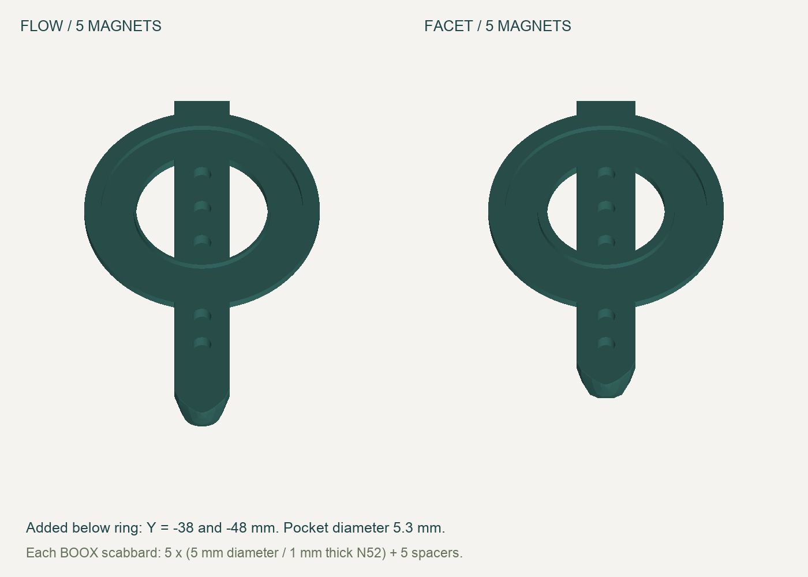
AERIS 與 VERTEX 底部設有 5 顆 Ø5.3 × 4.0 mm 盲孔（Y = -48, -38, -12, 0, 12 mm）。新增的兩顆下置磁孔完美避開 Ø58.4 mm MagSafe 環形嵌槽與尾端收窄段，大幅加強筆身下半段吸附力，徹底杜絕單向抽拔時的晃動或脫落。
外形可以共用設計語言，筆身配合必須分開設計。以下為數位模型的佈局假設，不代表已通過實機測試。
以 149 mm 機身、157.5 mm 筆長及磁環中心距底約 75 mm 計算。AERIS 長鞘底端餘量 3 mm、筆尾上露 24.54 mm；VERTEX 稜角鞘分別為 13.00 mm、34.54 mm；ECLIPSE 快取環與 ZEPHYR 流線夾分別為 3.5 mm、12 mm。筆可軸向移動，實際位置與磁環尺寸仍須確認。
待打印與實機驗證以 iPad mini 6 / A17 Pro（195.4 × 134.8 mm）及 Ø8.9 mm Pencil 作獨立研究。TITAN PRO 達成 0 mm 頂部露出之 100% 機身包絡；ECLIPSE MINI 實現瞬拆快拔。背面收納不取代側邊充電。
獨立適配，不通用承諾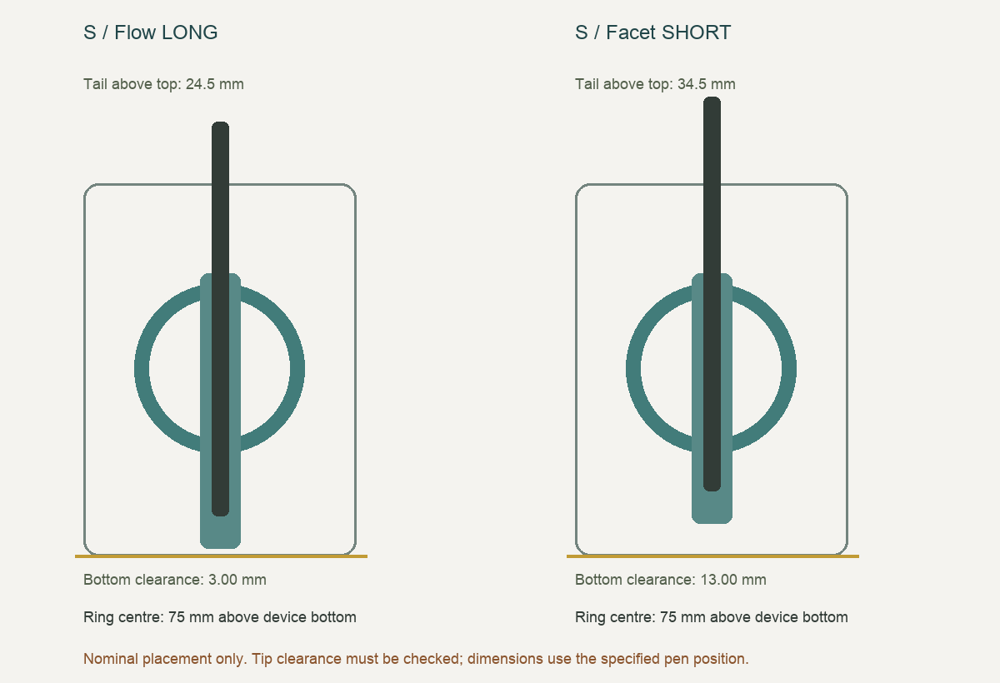
設備型號 · 手寫筆型號與實測筆徑 · 背殼厚度 · 磁環規格與極性。磁吸收納不等同於充電功能。
我們先把使用限制變成幾何，再反覆調整輪廓與結構。目前完成數位模型與試印資料，尚未進入已驗證的商品階段。
以 InkSense Plus 的 9 mm 筆徑與 157.5 mm 筆長為起點：筆尖不能超出 BOOX 機底、筆尾可以上露；移除綁帶，保留緊湊的一體外形。
筆鞘系列 (AERIS, VERTEX) 用單一通道容納筆身；快取系列 (ECLIPSE, ZEPHYR) 把筆套、環帶與三個下置磁孔整合。沿用磁環界面，分開處理「支架連接機殼」與「筆留在支架」兩件事。
把 v5 的圓筒與三角底板交界改成連續收束尾端。按 75 mm 磁環位置，把 AERIS 底部餘量收至 3 mm，加長至 110.00 mm；VERTEX 保留 100.00 mm；兩款旗艦長鞘升級 5 顆 Ø5×1 mm 梯次強磁佈局，大幅增強下端筆身吸附力；同步定名 ECLIPSE、ZEPHYR 與 iPad 旗艦款 (TITAN PRO)。
先試筆徑與側鍵空間，再檢查整條隧道。與打印商確認材料、公差及表面處理，裝配磁鐵後量度抽出力與滑移，核對實機底部位置。
根據反覆插拔、攜帶及受控跌落測試修改結構；再評估一致性、成本、包裝與組裝指引。若保持力不足，先改固定方式，不能用外觀取代驗證。
收好設備時也能收好筆，減少分開保管的步驟。
整合多餘零件與突出邊緣，以機身邊界檢查比例。
以實測保持力與耐久表現決定結構，而非只看磁鐵等級。
從最初為了解決 +8.5 mm 溢出悖論建立的三角函數模型，到今日一體成形的 v9 殿堂級旗艦矩陣，以及 iPhone Duo 雙屏簽名旗艦 AURA DUO。點擊箭頭可直接載入對應歷代 STL 模型。
簽名旗艦誕生：首款專為 iPhone Duo 雙屏摺疊機設計的磁吸筆座。鉸鏈感知側凹底座確保折疊與展開雙態穩固；Ø8.9 mm 精準筆鞘完整支援 Apple Pencil Pro；5 枚梯次 N52 強磁 + MagSafe 58.4 mm 磁環，側滑長鞘 94 mm 流光導軌。產品矩陣正式進入雙屏時代。
以殿堂級命名重構產品矩陣：精修外輪廓與筆位下移，AERIS 與 VERTEX 升級 5 顆 Ø5×1 mm 盲孔磁吸佈局，解決下端筆身固定問題；AERIS 底部留 3 mm、上露減至 24.54 mm；VERTEX 建築稜角切面；ECLIPSE 與 ZEPHYR 雙磁快取夾；新增 iPad mini 專屬 TITAN PRO 與 ECLIPSE MINI。
早期85 mm量度已更正為75 mm（v8/v9）；修整 v5 盾形過長尾翼；建立 10 個 STL（磁石改為Ø5×1 mm；膠厚暫設0.2 mm） 完整打樣包與公差試片。
驗證筆尖向下完整物理防護，但因總長 144 mm 下探過深，促使後續版本精修底端錐度與長度。
放棄分離式 TPU 軟套，首度將剛性尼龍筆套直接融合於底座，並將磁鐵孔由正面移至底面隱藏。
探索頂部導向環與底部受納鞘的雙孔配合，驗證了插筆導向感，為單一連續隧道奠定基礎。
以純圓盤形狀驗證 MagSafe 58 mm 磁環與 3 顆手寫筆吸附磁鐵的排布受力，確立雙磁力架構。
首度量化 BOOX Go 6 (149mm) 與 InkSense Plus (157.5mm) 的尺寸衝突，推導出 34° 對角無溢出幾何包絡公式。
幾何檢查已完成；保持力、跌落、耐久及實機相容性尚待驗證。以上是開發目標與階段，不是已達成的性能承諾。MagSafe 為連接形式的設計參考，不代表 Apple 認證。
我們堅持透明公開的造物哲學。無論是磁場對 E-Ink 螢幕的潛在影響、3D 打印材料選擇，抑或是對 iPad mini 的支援，所有工程細節在此為你一一解答。
目前未做磁場、壓感干擾或長期裝機測試，也沒有經驗證的磁屏蔽結構。請先測實際筆身能否吸附，再以低處軟墊試裝；不能僅靠N52等級保證保持力。
使用者已確認之前85 mm讀數有誤，正確為距保護殼底75 mm。v9 Flow/AERIS長110 mm，底部留3 mm；Facet/VERTEX長100 mm，留13 mm；K+M指定筆位留3.5 mm。波浪殼黏附與搖晃待實測。
孔徑5.3 mm、深4 mm，由底面裝入。Ø5×1 mm磁石以暫定0.2 mm膠層貼近孔頂，下方用Ø5.05×2.7 mm墊片承托並另行固定。若膠厚不同，需重算墊片。背殼磁環是另一組硬件。
iPad外形暫沿用尺寸研究，磁孔同步改為Ø5×1 mm；未完成實機驗證，也不提供充電。先向打印商詢價PA12試件並打印筆徑試片，核對公差、側鍵及長通道清粉。
AURA DUO 為 iPhone Duo 雙屏摺疊機專屬簽名款。依據真實展開動態學（Kinematics），中央軸心（X=0）為雙屏鉸鏈中軸。為杜絕展開時筆座與鉸鏈互相干涉（卡中軸），AURA DUO 筆鞘長鞘（Scabbard）特別朝機身右外側外擴 60.3 mm，筆身（Apple Pencil Pro Ø8.9 mm）完全收納插於外緣長鞘內，底座內側則保留 6 mm 鉸鏈避讓切角。雙屏無論在 180° 完全攤平書寫、折疊攜帶或任意角度懸停時，均與中軸完全零干涉。
目前是v9數位原型，打樣包有6主件、3試片及1墊片，共10個STL（AERIS與VERTEX升級為5磁孔設計）。網格檢查不等於保持力、跌落或疲勞測試。請按打樣指南逐步驗證。
MAKE IT TANGIBLE
先檢視模型，再準備你的第一個樣件。
打樣包包含 10 個 STL（v9 AERIS & VERTEX 為 5 磁孔設計）、AURA DUO 雙屏旗艦簽名款、3 款側滑 STL 與 2 款全新開脊微彈 STL（ORBIT / STRATOS）。請先閱讀指南與數位檢查結果，再與打印商確認製程；實體保持力與配合尚未驗證。